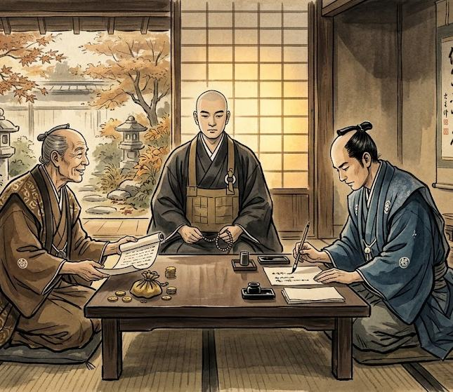

Храм-свидетель
Храм может выступать нейтральным свидетелем важных событий и действий. Если человеку или организации необходимо, чтобы совершённое действие было подтверждено независимым человеком, они могут обратиться к Сангхе.
Храм может выступать нейтральным свидетелем важных событий и действий. Если человеку или организации необходимо, чтобы совершённое действие было подтверждено независимым человеком, они могут обратиться к Сангхе. Монах присутствует при событии, наблюдает за происходящим и после его завершения может подтвердить только то, что видел и слышал лично.

Свидетельство храма
К монаху можно обратиться для присутствия при заключении договора, принесении клятвы, передаче имущества, заключении перемирия, важных соглашениях между организациями или других событиях, где требуется независимый свидетель. Перед проведением мероприятия стороны заранее сообщают храму, что именно должно быть засвидетельствовано, где и когда оно состоится.
Во время события монах не вмешивается в происходящее без необходимости. Его задача - внимательно наблюдать и запомнить основные обстоятельства. После завершения он может подтвердить, кто присутствовал, что было сказано и какие действия действительно произошли перед ним.
Обет истины
Для таких случаев в храме существует особый обет. Монах, принявший его, обязуется говорить только правду о том, чему был непосредственным свидетелем. Он не имеет права изменять свои слова ради выгоды одной из сторон, скрывать увиденное или намеренно искажать произошедшее. Именно поэтому не каждый монах может выступать официальным свидетелем храма. Такой статус требует доверия и особой ответственности. Если стороны хотят получить именно свидетельство Сангхи, они заранее договариваются о присутствии монаха, принявшего обет истины.
Нейтральность свидетеля
Монах не становится судьёй только потому, что был свидетелем события. Если две стороны заключили соглашение, он не решает, было ли оно справедливым. Если между людьми возник спор, он не определяет виновного. Его задача намного проще - подтвердить то, что произошло на его глазах. Если впоследствии одна из сторон заявит, что событие проходило иначе, храм может предоставить своё свидетельство. При этом монах говорит только о том, что видел и слышал сам, не добавляя слухов, предположений или чужих рассказов.
Мир приходит изнутри. Не ищи его снаружи.Будда Шьякмуни